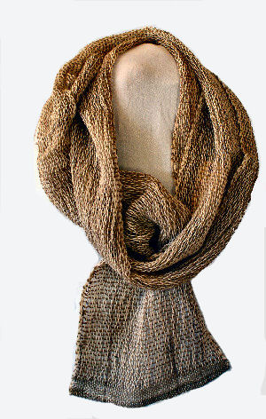

Shawls

Open Weave Knotweed Shawl1
Cotton and wool shawl woven in my signature open weave has a lovely drape.
The white cotton threads are dyed with brown walnut
shells and the wool yarn hand dyed with a local plant
called " knotweed".
The natural colors go well with linen.
Size 24 x 88 inches
$95

Steel Grey Shawl2
Merino wool/tencel blend hand woven
into this graceful shawl.
Dry clean only
measures 24 x 94 inches $150
Quantity

Open Weave Sea Foam Shawl3
Hand dyed with black walnut shells
cotton yarn is woven together with
wool dyed with locally gathered plants.
Colors vary in warm linen tones.
size 24 by 88 inches $150.
Quanitity

Hit and miss dye pattern creates a natural look.
Asymmetrical Wraps
Asymetrical Jewel Wrap4
Merino Wool Blend and
Bucle Cotton in jewel tones.
Small Quantity
Medium Quantity
Large Quantity
Asymmetrical Wraps
Asymetrical Wrap in Steel5
Graceful and easy to wear. Asymetrical
wrap is hand woven in versatile steel color.
Merino wool/tencel blend yarn.
Dry clean only
Small Quantity
Medium Quantity
Large Quantity
Asymmetrical Wraps

Open Weave Knotweed Scarf6
Soft cotton and wool scarf is hand dyed
using local plants. Black walnut shells color the
cotton and the wool/tencel blend is dyed using
locally gathered knotweed.
Each one unique as color varies in shades of warm linen.
Measures 10 x 88 inches
Small Quantity
Medium Quantity
Large Quantity
Asymmetrical Wraps
Sea Glass Scarf7
The greens and blues of beach
sea glass are woven together to
create this lovely scarf.
Cotton/merino rayon
boucle. Hand wash.